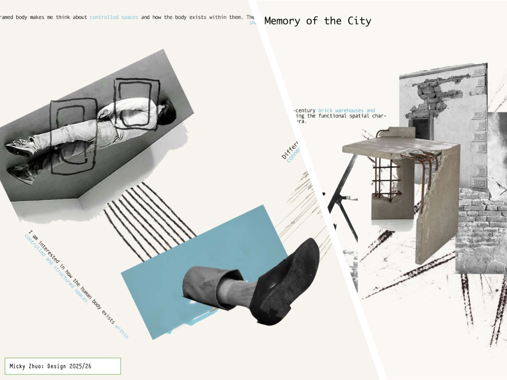
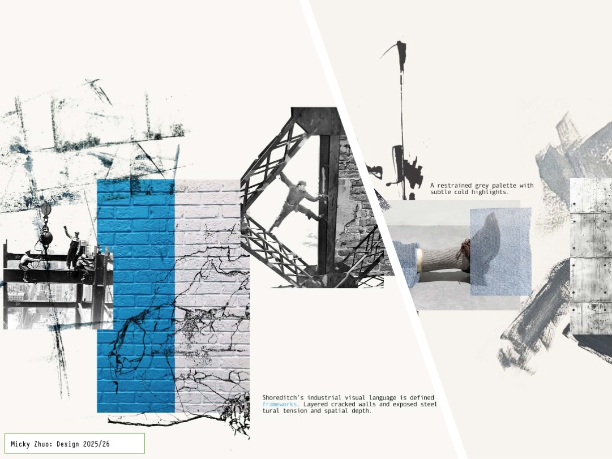

Typing Your
Mark-Making
What Is This Session?
In Session 1 you turned your handwriting into a font you could type with. This session goes further. You will turn your hand-made marks into a visual language — a set of graphic tools you can use to build a research page that tells a story.
The marks you make will do real work on the page: connecting images, guiding the eye, framing ideas, and showing relationships between your primary research and secondary sources.
Student Inspiration
Look at how Micky Zhuo used marks, type, and images together to create research pages that feel completely their own:


The Key Idea: Calligraphr as a Mark Library
- Press A → a diagonal slash appears
- Press B → an ink splatter appears
- Press C → a gestural underline appears
- These marks scale perfectly, work in any Adobe app, and feel completely yours
What Makes a Mark Work on a Page?
💡 The most important question
Before you draw any mark, ask: does this mark feel like my research theme? A mark about decay should feel different from a mark about structure. The marks carry meaning before anyone reads a word.Do this before class. You are designing a set of hand-made marks that will become your visual vocabulary for this project.
Step 1 — Identify Your Research Theme
Your marks should respond to your research focus — the concept or idea driving your work. Look at your research and ask yourself:
Finding Your Theme
- What connects your artist references? What do they share?
- Is there a feeling, texture, or quality in your primary research images?
- If your project had a material quality — rough, fragile, geometric, organic — what would it be?
- What word would you use as a subheading on your research page?
Step 2 — Plan Your Mark Set
You need at least 8–10 marks — enough to cover different functions on the page. Plan one mark for each role:
Step 3 — Download the Calligraphr Template
Go to calligraphr.com and log in with your Session 1 account.
- Click "Templates"
- Choose any character set — you only need the boxes, not the letters
- Download as PDF and print on white paper
Write a small pencil note at the top of each box — which mark goes here? For example: box A = diagonal slash, box B = ink splatter. This is your mark map — keep it, you'll need it later.
Step 4 — Make Your Marks
Use black ink on the template. Your marks should fill the box boldly — not timidly. Think about what materials respond to your theme:
Example of a completed mark template — bold, dark marks assigned to character boxes
✓ Works well with Calligraphr
- Bold brush marks in black ink
- Thick pen gestures and strokes
- Stamp impressions (dark ink)
- Block print marks
- Drawn shapes — rectangles, arrows, spirals
- Splattered or flicked ink (bold, not too fine)
⚠ May need testing first
- Very fine pencil or light charcoal
- Extremely dense crosshatching
- Photographic or tonal textures
- Very pale or diluted marks
💡 Make extras
- Make 2–3 versions of each mark — choose the best one to scan
- Test on a scrap piece of paper first
- Wait for all ink to dry fully before scanning
- Consider making marks in the same session so they feel consistent as a set
Step 5 — Scan Your Template
- Scan at 300 DPI or higher
- Or use Adobe Scan / Microsoft Lens on your phone
- Save as JPEG
- Check it is straight and clearly lit — no shadows across boxes
Homework Checklist ✓
You are now going to turn your scanned marks into an installable font using Calligraphr. Once installed, you can type your marks into any Adobe app.
- Log in to Calligraphr
- Go to "My Fonts" → "Upload Template"
- Choose your JPEG file
- Look at each character box — does the mark appear correctly?
- Check marks aren't clipped at the edges
- Check the mark feels like it has the right scale in the box
- Click on a character → "Edit Character"
- Delete any background noise or stray marks outside your intended shape
- Do this for every mark — small spots will repeat every time you use that key


Left: mark as uploaded — background noise visible. Right: after cleaning in the Calligraphr editor.
- Give your font a name — include your name and theme: e.g. "Sam_Industrial_Marks"
- Click "Build Font"
- Check the preview — does it look right?
- Download the .ttf or .otf file
- Mac: Double-click → "Install Font"
- Windows: Right-click → "Install"
- Important: Close and reopen Photoshop or InDesign to see your font
- Open Photoshop or InDesign
- Select the Text tool — find your font by name
- Type the keys you assigned to your marks (A, B, C…)
- Your marks should appear — try scaling them up and down
💡 Scale is everything
Because these are font characters, you can size them using the font size field. A mark at 12pt is a small annotation detail; the same mark at 200pt becomes a full-bleed graphic element.Task 1 Checklist ✓
Now use your mark font to build a research spread that tells the story of your project. This is not about decoration — every mark should be doing a job.
What Your Page Must Include
Layout Principles
Look at Micky Zhuo's work again — these are the structural decisions that make the pages work:
Use a diagonal
A strong diagonal line or element creates energy and guides the eye across the whole spread — from one cluster of images to another.
Connect primary to secondary
Use arrows or connector marks to physically link your own photographs to artist references. Make the relationship visible.
Frame to analyse
A drawn rectangle or circle over part of an image isn't decoration — it's saying "look here, this part matters." Use it analytically.
Layer text as mark
Try rotating text, placing it at an angle, or running it along the edge of an image. Text can be a graphic element, not just information.
One accent colour
Choose one accent colour and use it consistently for a specific purpose — links, key words, or a connecting thread across the page.
Let marks breathe
Don't fill every gap. Negative space — gaps between marks and images — is part of the composition. Generous space makes marks feel deliberate.
Student Examples
See how marks are used to connect and narrate across a research spread:
[Student name] — [research theme]

[Student name] — [research theme]
Referencing Sources
Every image on your page that is not your own work must be credited. This is not just good practice — it shows the depth of your research.
How to Reference on a Layout Page
- Artist name + work title + year placed close to the image — small, neat, consistent
- If from a website: artist name + website name is sufficient
- If from a book or archive: author/institution + publication name
- Use your accent colour for reference text — as Micky did — to make it visually consistent and distinct from your analytical writing
- References are part of the design, not an afterthought
Writing Knowledge on the Page
Your page should include at least one piece of written analysis — not a caption, but a short paragraph that demonstrates you understand the context of your research.
💡 What "knowledge text" means
- Not just: "This is a photo of a cracked wall."
- But: "The cracked surface references a broader language of urban material memory — walls as archives of use, time, and erasure."
- Connect what you see to what you know — from artist research, cultural context, or making processes
- This text can be placed at any angle, any size — but it must be readable
Task 2 Checklist ✓
Show what you made and what you learned.
- Mac: ⌘ Shift 3 for full screen or ⌘ Shift 4 to select an area
- Windows: Win + Shift + S
Screenshot: your mark template, the Calligraphr editor, and your finished layout page.
Answer these questions briefly:
- What is your research theme and how do your marks express it?
- Which mark on your page does the most important work — and why?
- What would you do differently next time?
Click "Download Progress Report" to save your documentation.
Submit to Padlet
Upload Three Things
What You Built Today
- A personal mark library derived from your research theme — installed as a font, usable in any Adobe app
- A research layout page where marks do real compositional and narrative work
- A page that connects primary and secondary research visually and in writing
- An understanding of how layout itself carries meaning — not just what you show, but how you show it
- All sources properly referenced as part of the design